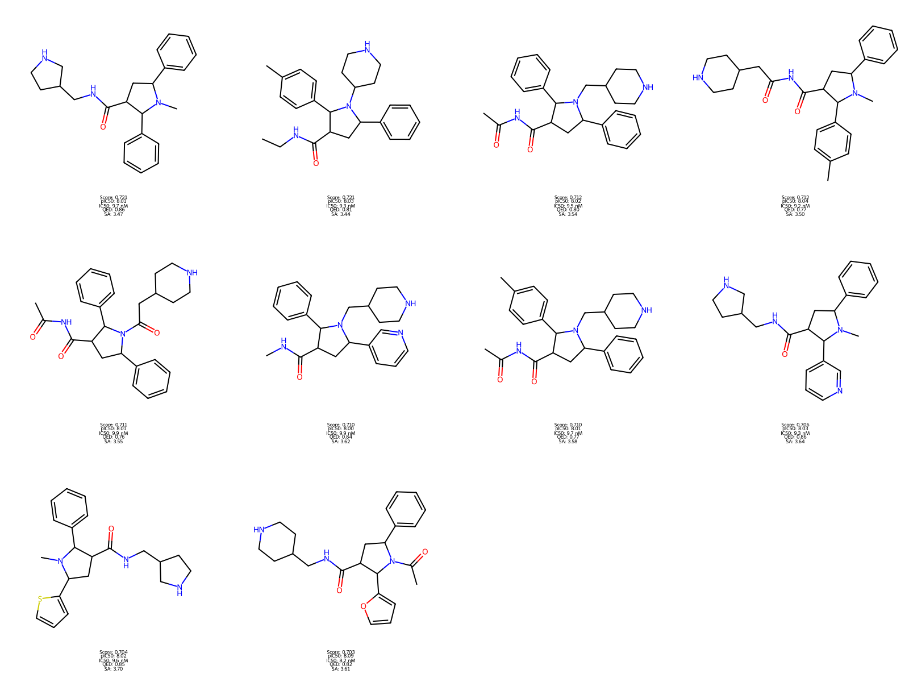
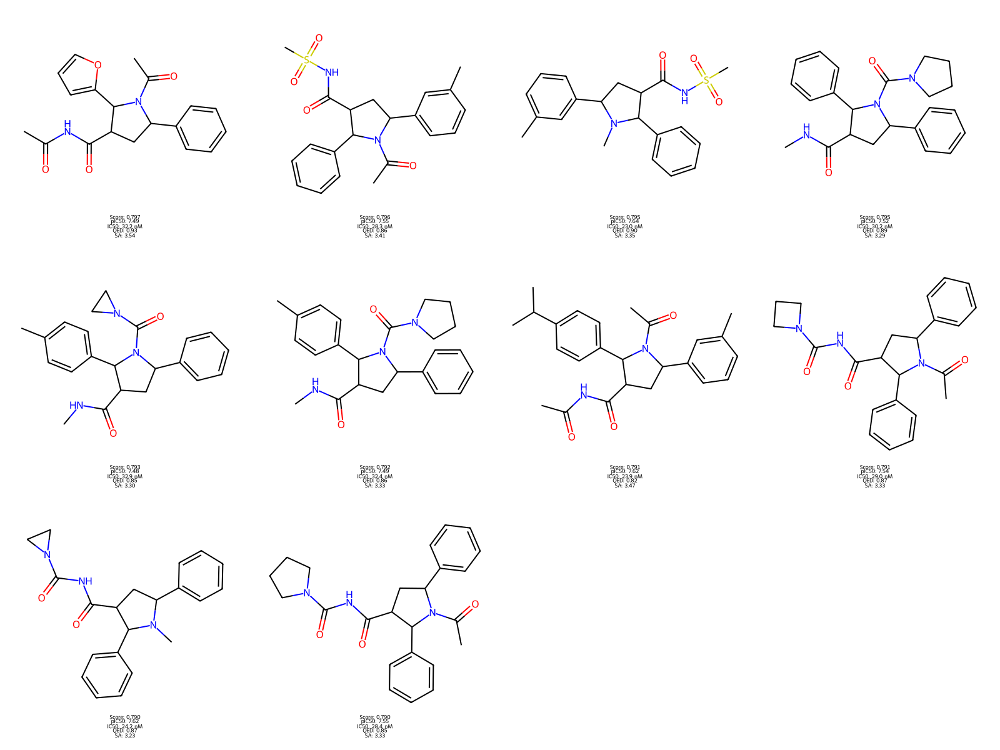

📈 Generation Analysis

🧪 关键指标
| 总分子数 | 113.6万 | |
| 唯一分子 | 109.7万 | 96.6% |
| IC50 < 10nM | 2,170个 | 0.2% |
| IC50 10-50nM | 108.1万 | 98.6% |
| 金标准 | 96个 | 0.01% |
| pIC50 ≥ 8.0 | 8.00-8.19 | |
| QED | 0.70-0.86 | |
| SA | 3.44-4.00 | |
| 高标准 | 28.9万 | 26.4% |
| 中标准 | 60.8万 | 55.4% |
⚠️ 数据说明
以上为基于去重后数据的统计
以上为基于去重后数据的统计
🎯 IC50活性分布
✅ 成功率：98.8%分子达到pIC50 ≥ 7.0
⚛️ 物化性质统计
| 分子量 | 486 ± 71 Da | 97.0%达标 |
| LogP | 3.98 ± 1.31 | 78.8%达标 |
| HBA | 5.58 ± 1.45 | 99.9%≤10 |
| HBD | 1.35 ± 0.59 | 100%≤5 |
| TPSA | 88.2 ± 23.7 Ų | 97.8%达标 |
| QED | 0.52 ± 0.15 | |
| SA Score | 3.95 ± 0.53 | 98.8%在1-6 |
🔄 实验进展预测
| 当前 (37%) | ||
| 总分子 | 113.6万 | |
| 金标准 | 96个 | |
| 预计 (100%) | ||
| 总分子 | ~160万 | |
| 金标准 | ~140个 |
⚠️ 化学稳定性
| 触发警报 | 5,740 | 0.5% |
| [*;r8] | 2,266次 | |
| [NX3][NX3] | 1,718次 | |
| [SH] | 975次 |
✅ 99.5%分子通过稳定性检查
💎 金标准
96
✓ pIC50 ≥ 8.0
✓ IC50: 6.5-10 nM
✓ QED ≥ 0.7
✓ SA ≤ 4.0
✓ MW: 300-500 Da
✓ LogP: 1-4
✓ IC50: 6.5-10 nM
✓ QED ≥ 0.7
✓ SA ≤ 4.0
✓ MW: 300-500 Da
✓ LogP: 1-4
⭐ 高标准
289,397
✓ pIC50 ≥ 7.5
✓ IC50: 5.6-31.6 nM
✓ QED ≥ 0.6
✓ SA ≤ 4.5
✓ IC50: 5.6-31.6 nM
✓ QED ≥ 0.6
✓ SA ≤ 4.5
✓ 中标准
607,640
✓ pIC50 ≥ 7.0
✓ IC50: 5.6-45.5 nM
✓ QED ≥ 0.5
✓ SA ≤ 5.0
✓ IC50: 5.6-45.5 nM
✓ QED ≥ 0.5
✓ SA ≤ 5.0
💎 金标准 Top 10

IC50范围6.5-10 nM
平均QED0.79
平均SA3.63
⭐ 高标准 Top 10

IC50范围5.6-31.6 nM
平均QED0.69
平均SA4.01
✓ 中标准 Top 10

IC50范围5.6-45.5 nM
平均QED0.63
平均SA4.03
🔬 下一步工作
- ✓ 等待实验完成 (预计4000步后稳定)
- ✓ 从最终金标准中选择20-30个进行合成
- ✓ 体外酶活性测定 (NS2B-NS3 protease)
- ✓ 细胞毒性评估 (CC50)
- ✓ 抗病毒活性测试 (EC50)
✅ 中期总结
- 当前生成113.6万候选分子 (37%进度)
- 获得96个金标准极高活性候选物
- 98.8%分子达到pIC50 ≥ 7.0
- 化学稳定性优秀：仅0.5%警报
- 预计最终：~160万分子, ~140个金标准